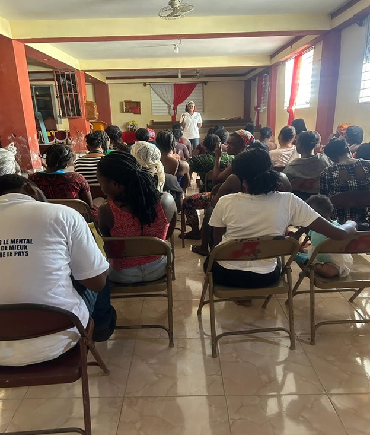
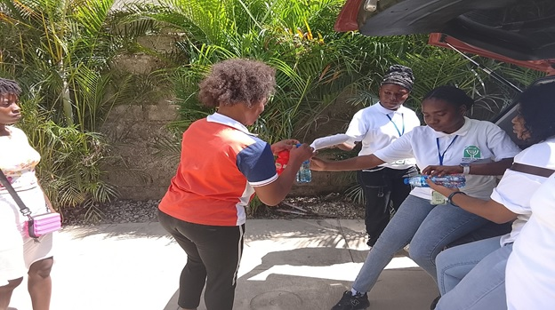
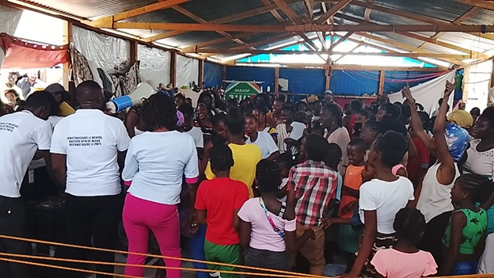
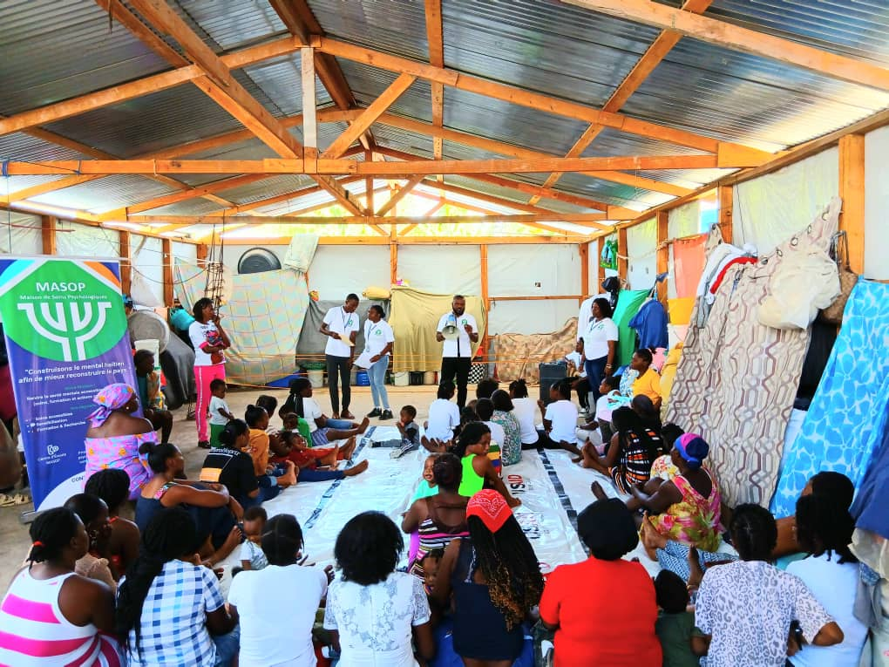
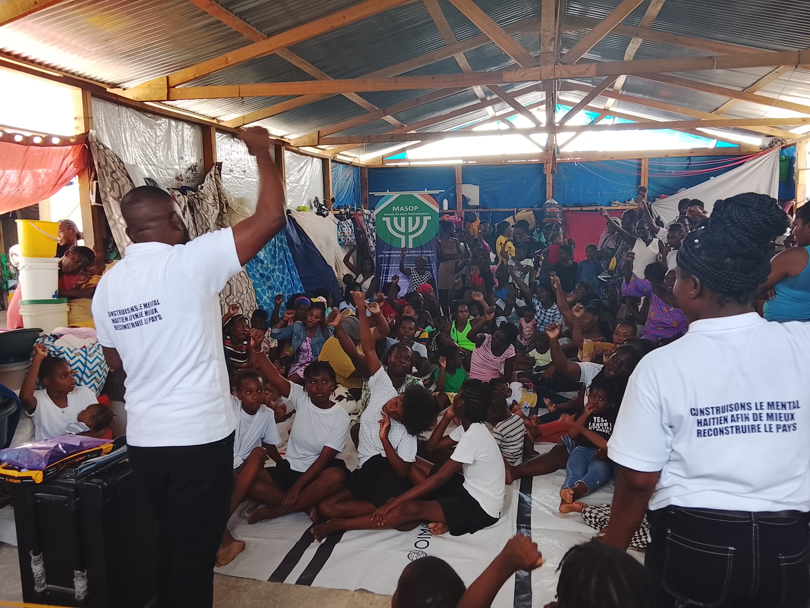
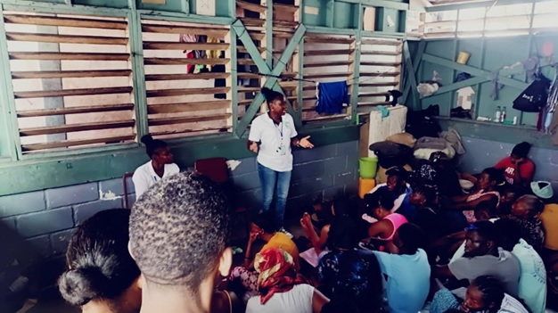

Projet REPI – Ranfòse Espwa Pwoteksyon ak Enklizyon
Janvier - Mars 2026
Contexte
MASOP intervient dans 7 centres collectifs de la Zone Métropolitaine de Port-au-Prince (ZMPP), couvrant 6 515 ménages et 15 177 individus déplacés. Les activités combinent sensibilisation générale et sensibilisation par ciblage sur les thèmes suivants : violences basées sur le genre (VBG), planning familial, méthodes de contraception, droits des enfants et protection de l'enfance.
Centres collectifs couverts
Chiffres clés
Témoignage de terrain
"Des mères nous ont confié ne pas savoir comment vivre après ce que leur fille a subi. Des femmes qui n'ont été aidées par aucune instance. Le travail continue."
Actions menées
- Sensibilisation des femmes sur VBG, planning familial et contraception
- Activités ludiques et éducatives pour les enfants sur leurs droits
- Accompagnement psychologique individuel pour les victimes de viol
Photos du projet












Limitations
MASOP intervient spécifiquement sur le bien-être psychologique. Nos ressources sont limitées en raison des demandes d'accès aux moyens de subsistance, au système de santé et suivi approprié.
Perspectives
MASOP compte continuer ses interventions à travers nos visites et suivis psychologiques en faveur des déplacés jusqu'à leur rétablissement.